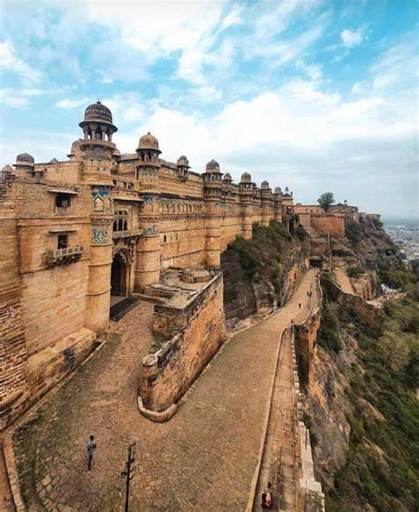
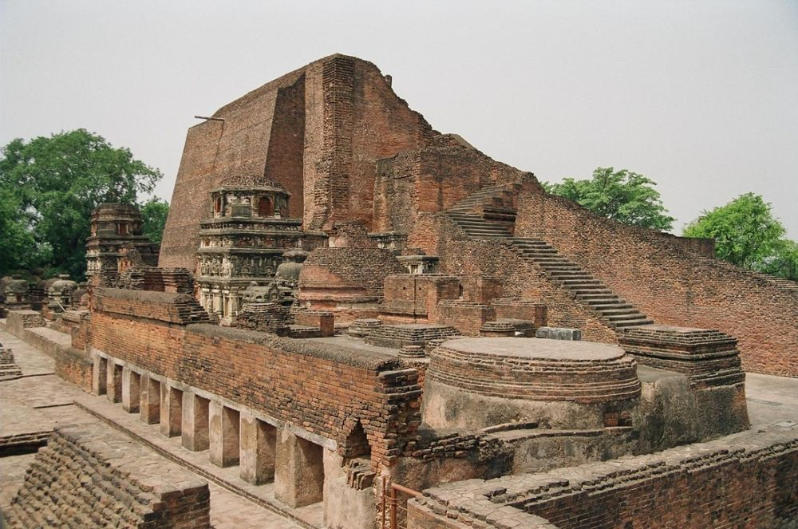

A historic fort in Gwalior, India
walior Fort, located in the city of Gwalior in Madhya Pradesh, India, is one of the most significant forts in the country due to its strategic location and historical importance. The fort has a rich history spanning over 1,000 years, with its origins dating back to the 8th century. It has been ruled by various dynasties, including the Tomars, Mughals, Marathas, and Scindias, each leaving their mark on its architecture and cultural landscape. The fort played a crucial role in the history of Central India, serving as a formidable stronghold and a center of power for many rulers. It was considered virtually impregnable due to its steep cliffs and solid fortifications. Over the centuries, Gwalior Fort witnessed numerous battles and sieges, reflecting its strategic importance in medieval India. It also served as a cultural center, attracting scholars, artists, and musicians who contributed to its vibrant cultural milieu.
The fort showcases a blend of architectural styles, including Rajput, Mughal, and Hindu influences. Its massive walls, intricate carvings, and imposing gates are a testament to the skill and craftsmanship of its builders.
Gwalior Fort is renowned for its impressive architecture, which blends Hindu, Muslim, and Jain influences. The fort complex is divided into several sections, each showcasing distinct architectural styles and historical significance: Man Singh Palace: Built by Raja Man Singh Tomar in the 15th century, this palace is a masterpiece of Rajput architecture. It features elaborate carvings, colorful tiles, and intricate lattice work (jali), reflecting the opulence of the Tomar dynasty. The palace also includes the famous Gujari Mahal, which now houses the Archaeological Museum displaying a rich collection of sculptures, inscriptions, and artifacts. Gujari Mahal: Constructed by Raja Man Singh for his queen Mrignayani, the Gujari Mahal is an exquisite example of medieval architecture. It originally served as a palace for the queen and is now a museum displaying artifacts from the Gupta and medieval periods. The museum houses sculptures, pottery, and other artifacts that offer insights into the history and culture of Gwalior. Teli ka Mandir: This ancient temple within the fort complex is an architectural marvel blending Dravidian, Nagara, and Indo-Aryan styles. Believed to have been built in the 9th century, it stands tall with its towering vimana (spire) and intricately carved sculptures depicting various deities. Sas Bahu Temples: These twin temples dedicated to Vishnu (Sas) and his consort (Bahu) are notable for their exquisite carvings and architectural elegance. Dating back to the 11th century, these temples exemplify the rich tradition of temple architecture in Central India. Jain Sculptures: Gwalior Fort is also home to several Jain sculptures and monuments, including the impressive 8th-century rock-cut Jain colossi and the Tirthankara images carved into the rock faces.